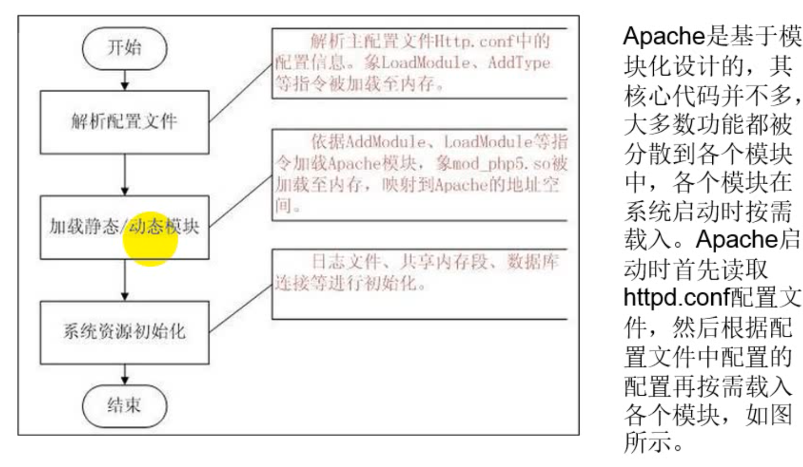
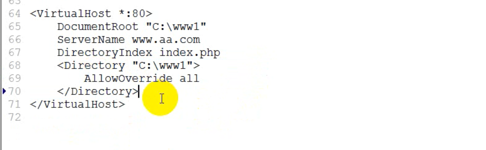

主要总结Apache的工作原理、常用的httpd命令以及使用Apache搭建虚拟主机的方法。
Apache工作原理
首先看一下Apache的工作目录：
看一下Apache的工作机制：
Apache 本身没有功能，他的功能是通过加载模块实现的，具体加载哪些是由conf控制的。
接下来看一下Apache 启动过程：

httpd命令
httpd -k start
httpd -v
httpd -t 检查Apache的配置是否正确
httpd -M查看加载了哪些模块
Apache 列目录：
默认首页设置：

分布式部署
一个Apache 支撑多个虚拟机主机，如果httpd.conf和php.ini发生了变化，则所有的虚拟主机的配置都发生了变化，如何实现不同虚拟主机有不同的配置。
.htaccess 文件又称为分布式部署文件，这个文件可以覆盖httpd.conf文件中的配置。一个网站下可以有多个分布式部署文件。
每个.htaccess文件只能作用于当前目录和子目录
分布式部署特点：
- Apache 配置文件由主配置文件和分布式配置文件组成。
- 主配置文件修改后需要重启服务器，分布式配置文件修改后不需要重启服务器
- 创建分部署不受文件必须借助于编辑器。
- 分布式部署会降低Apache的性能。
分布式部署文件没有覆盖掉主配置文件，的原因在这里：

分布式部署：允许分布式部署配置文件覆盖主配置文件。
通过分布式部署文件更改PHP配置
通过 php_value 和 php_flag 来更改 PHP 配置的值。（注意，这两个指令属于Apache的指令）
所有的PHP配置有两种，一种是开关性质，另一种是数值性质
Php_flag 用来更改开关性质的
Php_value 用来更改数值性质的
ini_get() 获取PHP的值。